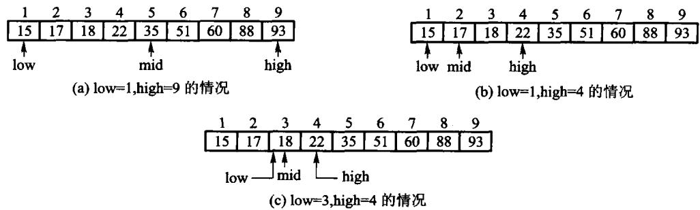
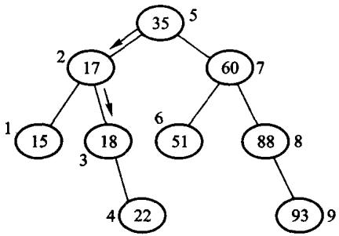
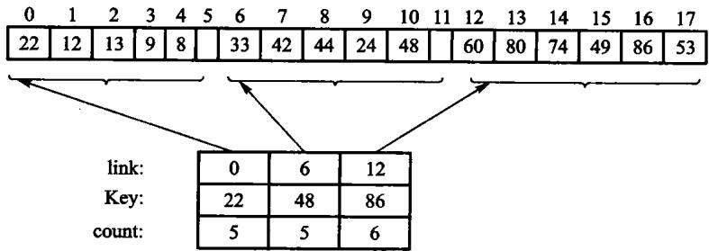
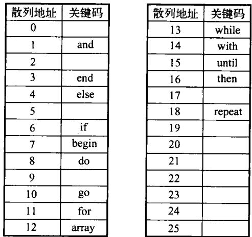
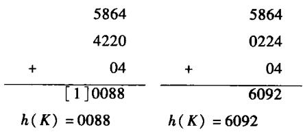
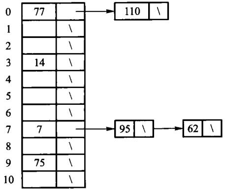
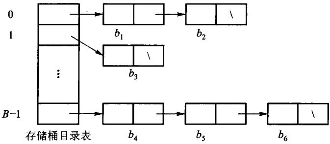
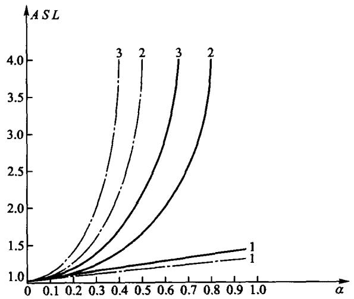

检索的目标是在一组记录中找到目标键。顺序检索不要求有序；二分检索要求有序，靠每次排除一半区间加速；散列表用散列函数直接定位槽位，冲突时继续探测。
源码：检索、集合和散列表·教学版、 检索、集合和散列表·工程版、 可运行示例、 墓碑探测测试。
检索是在一组记录里定位关键码等于给定值的那一条，或属性满足条件的那些条。成功就是至少找到一条，失败就是没有。精确匹配查单个值，范围查询查一个区间。
为了衡量一个检索算法的效率，需要在时间和空间两方面进行权衡。检索运算的主要操作是关键码值的 比较，通常把检索过程中对关键码需要执行的平均比较次数称为平均检索长度（average search length，ASL），它是衡量检索算法优劣的时间标准，也是存储结构中元素总数 n 的函数：
其中 Pi 为检索第 i 个元素（即给定值 K 与存储结构中第 i 个元素的关键码值相等）的概率， Ci 为找到第 i 个元素所需的关键码值与给定值的比较次数。举原书的例子：线性表为 (a,b,c)， 检索 a、b、c 的概率分别为 0.4、0.1、0.5，则顺序检索的平均检索长度为 0.4×1+0.1×2+0.5×3=2.1，即平均需要比较 2.1 次才能找到待查元素。 「检索第 i 个元素的概率 Pi」可理解为：在很多次的检索中，检索第 i 个元素的次数占总次数的比例。 若已知各个元素检索概率的分布情况，则 ASL 可准确地反映检索算法的平均时间性能。 另外，衡量一个 检索算法还要考虑算法所需的存储量、算法的复杂性等因素。
可以把检索分成四类：基于线性表、按关键码直接访问（含散列）、树形索引、基于属性（倒排）。本章做前两类；树形索引见第 5、11、12 章，倒排见第 11 章。
#10.1 基于线性表的检索
数据放在数组或链表里，按给定值 K 与表中元素比较，直到命中或能确定不在表中。这一节不要求散列函数，也不建树，只靠线性结构本身。
#10.1.1 顺序检索
顺序检索（sequential search）是一种最基本的检索方法：针对线性表里的所有记录逐个进行关键码和 给定值的比较，若某个记录的关键码和给定值相等，则检索成功；反之检索失败。表中各数据元素可以 任意排列——这是它唯一的、也是最宝贵的优点：不要求有序，实现最简单，链表和数组都能用。
最好情况目标在第一个位置，比较 1 次；最坏情况目标不在表里，比较 n 次。在顺序检索中通常假设 对于所有 i 有 Pi=1/n（称为「等概率假设」），此时平均检索长度 ASL=(n+1)/2。
「监视哨」是一个值得单独说的技巧。 原书的做法是把位置 0 空出来做监视哨，检索前先 dataList[0]->setKey(K)，然后从后往前逐个比较，循环条件只写「当前元素是否等于目标」。 监视哨的作用是保证 while 循环一定终止：因为检索不成功时 i 会走到 0，而此时 dataList[0] 的关键码恰好等于 K，使得终止条件「被迫」成立。因此不必将 i > 0 写入循环检查 条件，从而使其得到简化。监视哨方法利用了一个重要的「加速」原理：当程序的一个循环需要测试 两个或多个条件时，应该尽量减少测试条件——比较次数的常数会小一点，阶不变。
对 {8,3,8,1} 查 8，第一次比较就命中下标 0；查 7 则依次比较 8、3、8、1，走完整张表才知道失败。重复关键码存在时，本书接口返回第一个匹配位置，这不是顺序检索自动保证的抽象性质，而是“从左向右、命中即停”这份实现的明确约定。
监视哨适合能临时修改的数组：先把目标值写到末尾的额外槽，再只问“当前元素是否等于目标”。循环一定会停，停在原表范围内就是成功，停在哨兵槽就是失败。但只读输入、并发共享数组或没有额外槽时，不应为省一个边界判断去改数据。
#10.1.2 二分检索
先说这个「有序」是什么意思。 对于任何一个线性表，若其中的所有数据元素按关键码值的某种次序 进行不增或不降的排列，则称为有序表——有序表是一种特殊的线性表。查英语字典的过程就是有序表 检索的日常版：字典按照从 a 到 z 有序排列，查字典时大体上翻一下，b 打头就靠前翻、z 打头就翻到 后面；如果当前页的单词排在待查单词的前面，则往后翻，反之往前翻，直到待查单词位于当前页的首末 单词范围内。这种查字典的方法体现了「先确定待查目标所在的范围，然后逐步缩小范围直到找到或找 不到该目标为止」的思想。
由于有序表中所有元素按不增或不降的次序排列，把表中任一元素的关键码值与给定值 K 比较，可根据 3 种比较结果区分出 3 种情况（以递增为例）：相等则检索成功；表中元素大于 K 说明待查元素若在表中 一定排在它之前；小于 K 则一定排在它之后。因此在一次比较之后，若没有找到待查元素，就可根据 比较结果缩小进一步检索的区间。
二分检索法（binary search）因此要求：表必须按关键码有序，并且能按下标随机访问，所以适合数组， 不适合链表。每次取当前区间的中点：相等则停；目标更大则丢掉左半，否则丢掉右半。区间长度每次 至少减半，比较次数是 O(log n)。二分检索是比较典型的分治算法，也可以改用递归来实现。
实现时用半开区间 [first, last)：中点是 first + (last - first) / 2，走左半时 last = middle，走右半时 first = middle + 1。这样不必写 middle - 1，无符号下标不会在 middle == 0 时下溢。循环条件是 first < last；区间空了还没找到，就返回空。
原书用有序表 {1,3,7,8,12,15,18,21} 查 18。按本书的半开区间写法：
| 轮次 | 候选区间 [first,last) |
middle |
中值 | 判断 |
|---|---|---|---|---|
| 1 | [0,8) |
4 | 12 | 12<18，令 first=5 |
| 2 | [5,8) |
6 | 18 | 命中下标 6 |
若改查 14，过程会是 [0,8) → [5,8) → [5,6) → [5,5)，区间为空后失败。每轮都维持同一个不变量：若目标存在，它一定还在 [first,last) 里；更新边界时必须把已经比较过且不可能命中的中点排除。

图10.1把一次查找画成区间逐步缩小；图10.2则把所有可能的比较路径同时展开。这棵决策树其实 就是一棵 BST（二叉搜索树）：检索某个值时正好走了一条从根结点到与该给定值对应结点的路径， 所以 BST 中关键码与给定值的比较次数正好等于该值对应结点所在的层数加 1，因此二分检索到某个 元素所需的比较次数最多不超过这棵树的层数加 1（即 BST 的高度）。注意：对同一长度的有序数组， 采用相同的二分检索算法，所对应的决策树的形状是固定的——不管数组中元素的数值是什么，数组 下标位置的 BST 都保持不变。
代价可以从代数角度精确算出来。 只比较 1 次就成功检索的结点数为 1=20；只比较 2 次的为 2=21；比较 j 次才成功的结点个数为 2j−1。若表中结点总数恰好为 n=20+21+⋯+2j−1=2j−1，则最大检索长度为 j；若 2j−1<n≤2j+1−1， 则最大检索长度为 j+1。总的来说，最大检索长度为 ⌈log2(n+1)⌉。 设检索每个结点的 概率相同，则在 n=2j−1 的情况下
当 n 较大时 ASL≈ log2(n+1)−1：二分检索的平均检索长度与最大检索长度相近， 因而效率较高。
但它有两条硬约束。 一是要求被检索序列事先按关键码次序排列，而排序本身是一种很费时的操作； 二是只适用于顺序存储结构，而在顺序结构中插入和删除都比较困难。因此，二分检索特别适用于那种 一经建立就很少改动、而又需要经常检索的线性表。

#10.1.3 分块检索
把 n 个元素分成 b 块。块与块之间有序（后一块的最小关键码不小于前一块的最大关键码），块内部可以无序。另造一张块索引，每项记下该块的最大（或最小）关键码和块的起始位置。检索时先在索引上顺序或二分，确定目标可能在哪一块，再在那一块里顺序查。
分块检索又称索引检索，如果线性表既希望有较快的检索速度又需要动态变化，就可以采用它。 索引表上的检索分两个阶段：确定待查元素所在的块；在块内检索待查的元素。第二阶段只能采用顺序 检索法，而第一阶段既可以采用顺序检索法，也可以采取二分检索法。 多数情况下数据不需要完全填满 每个块，因此索引表还需要记录每块当前记录的数目。
分块检索的平均检索长度等于两个阶段各自的检索长度之和。设线性表中共有 n 个数据元素，将表均分 成 b 块、每块含 s 个元素（n=s×b）。如果第一阶段以二分检索来确定块，则在等概率假定下
若第一阶段采用顺序检索，则
显然，当 s 取 n 时，顺序分块检索的 ASL 达到最小值 n+1。 原书给了一个直观的 对照：如果要检索的线性表中有 10000 个结点，把它分成 100 个块、每块 100 个结点，分块检索平均 需要做 101 次比较，而顺序检索平均约做 5000 次比较，二分检索则最多需要 14 次比较——分块检索 的时间性能高于顺序检索而低于二分检索。
如果数据块（子表）存放在外存时，还会受到页块大小的制约，此时往往以外存一次 I/O 读取的数据 （一页）作为一块。分块检索的主要代价是增加一个辅助索引数组的存储空间和将初始线性表分块排序 的运算；另外，当大量地插入删除运算使块中结点数分布很不均匀时，检索速度将会下降。
它的优点在插入删除上：在线性表中插入或删除一个结点时，只要找到该结点应属于的块，然后在块内 进行插入和删除运算即可；由于块内结点的存放是任意的，因此插入或删除比较容易，不需要移动大量的 结点——插入可以在块尾进行；如果待删除的记录不是块中最后一个记录时，可以将本块内最后一个记录 移入被删除记录的位置。
总之，线性表检索的三种实现各有优缺点：顺序检索效率最低但限制最少；二分检索效率最高但限制较多； 分块检索则介于二者之间。 实际应用中可根据线性表的具体情况进行选择，需要综合考虑检索效率、 插入删除频率等。本章不另写未验证的分块实现。

原书图10.3把主表分成三块：
块 0: 22 12 13 9 8 索引项 (max=22, start=0)
块 1: 33 42 44 24 48 索引项 (max=48, start=5)
块 2: 60 80 74 49 86 53 索引项 (max=86, start=10)查 44 时，先在索引中比较 22、48，确定只能在块 1；再顺序比较 33、42、44。查 23 时同样落到块 1，但扫完整块失败；不能因为 23 小于块最大值 48 就断言存在。块间有序只负责排除别的块，块内仍然无序。
若索引顺序查且每块等长，粗略代价是“查索引约 b/2 次 + 查块内约 n/(2b) 次”。令两项平衡得到 b≈n。索引改用二分后最优块数会变化，因此“固定分成根号 n 块”不是定义，只是特定成本模型下的选择。
#教学版：完整实现
本章的四件东西——两种检索、集合、散列函数、闭散列表——放在同一个文件里。 后面 10.2、10.3 各节就是把它拆开逐段讲。
// 检索、集合与散列 —— 教学版。
// 原书【代码10.1】【算法10.2】–【算法10.13】。
//
// 一个文件、能直接编译运行，给「第一次读这一章」的人看。
//
// sequential_search / binary_search 线性表上的两种检索
// IntSet 不重复整数集合与集合运算
// elf_hash ELF 散列函数
// HashTable 线性探测的闭散列表，含「墓碑」删除
//
// 与 modern.hpp（工程版）的分工：教学版把 `[[nodiscard]]`/`noexcept` 和压成一行的
// if 分支全部展开，其余逻辑一模一样。这一章没有手写存储管理，所以没有三法则/五法则
// 之分——`std::vector` 在这里只是「一块连续的槽位」，不是被它替换掉的教学内容
// （见 unit.json 的 d001_exceptions）。
#pragma once
#include <cstddef>
#include <optional>
#include <stdexcept>
#include <string>
#include <vector>
// ---------------------------------------------------------------------------
// 10.1 基于线性表的检索
// ---------------------------------------------------------------------------
// 【算法10.2】顺序检索：从头比到尾。找到返回下标，没找到返回空 optional。
// 代价 O(n)。它对数据没有任何要求——这是它唯一的优点，也是全部优点。
inline std::optional<std::size_t> sequential_search(const std::vector<int>& values, int key) {
for (std::size_t index = 0; index < values.size(); ++index) {
if (values[index] == key) {
return index;
}
}
return std::nullopt;
}
// 【算法10.3】二分检索：要求**已排好序**，每比较一次砍掉一半，代价 O(log n)。
//
// 这里用的是**半开区间** [first, last)：`last` 指向"最后一个候选的下一个"。
// 为什么不用书上常见的闭区间 [low, high]？因为闭区间在没找到时要写 `high = mid - 1`，
// 而下标是无符号的，`mid == 0` 时这一句会下溢成一个天文数字。
// 半开区间只写 `last = middle`，永远不减 1，这个坑就不存在。
inline std::optional<std::size_t> binary_search(const std::vector<int>& sorted_values, int key) {
std::size_t first = 0;
std::size_t last = sorted_values.size();
while (first < last) {
// 写成 first + (last - first) / 2 而不是 (first + last) / 2：
// 后者在两个下标都很大时会溢出。
std::size_t middle = first + (last - first) / 2;
if (sorted_values[middle] == key) {
return middle;
}
if (sorted_values[middle] < key) {
first = middle + 1; // 目标在右半边
} else {
last = middle; // 目标在左半边
}
}
return std::nullopt;
}
// ---------------------------------------------------------------------------
// 10.2 集合的检索
//
// 【代码10.4】【算法10.5】–【算法10.7】：用一个不含重复元素的表表示集合。
// 所有运算都建立在「查一个元素在不在集合里」之上，而这里的查是顺序检索 O(n)——
// 所以交集是 O(n·m)。10.3 节的散列就是来把这个 O(n) 压成 O(1) 的。
// ---------------------------------------------------------------------------
class IntSet {
public:
// 插入。已经有了就返回 false——集合不含重复元素，这是可预期状态，不是错误。
bool insert(int value) {
if (contains(value)) {
return false;
}
values_.push_back(value);
return true;
}
bool erase(int value) {
std::optional<std::size_t> found = sequential_search(values_, value);
if (!found) {
return false;
}
values_.erase(values_.begin() + static_cast<std::ptrdiff_t>(*found));
return true;
}
bool contains(int value) const {
return sequential_search(values_, value).has_value();
}
// 交集：本集合里凡是对方也有的，都收进结果。
IntSet intersection(const IntSet& other) const {
IntSet result;
for (int value : values_) {
if (other.contains(value)) {
(void)result.insert(value);
}
}
return result;
}
// 包含：对方的每个元素本集合都得有。
bool includes(const IntSet& other) const {
for (int value : other.values_) {
if (!contains(value)) {
return false;
}
}
return true;
}
std::size_t size() const { return values_.size(); }
private:
std::vector<int> values_;
};
// ---------------------------------------------------------------------------
// 10.3 散列方法
// ---------------------------------------------------------------------------
// 【算法10.8】ELF 散列：把字符串搅成一个整数。
//
// 逐字节读的是 `unsigned char` 而不是 `char`——`char` 在多数平台上是有符号的，
// 中文等非 ASCII 字节会变成负数，一进位运算就带出符号扩展，散列值随平台而变。
inline std::size_t elf_hash(const std::string& text) {
std::size_t hash = 0;
for (unsigned char character : text) {
hash = (hash << 4U) + character; // 左移 4 位，腾出位置放新字节
std::size_t high_bits = hash & 0xF0000000U; // 溢出到高 4 位的那部分
if (high_bits != 0) {
hash ^= high_bits >> 24U; // 折回低位，别让它白白丢掉
}
hash &= ~high_bits; // 再把高 4 位清掉
}
return hash;
}
// 【算法10.9】–【算法10.13】线性探测的闭散列表。
//
// 「闭散列」是指所有元素都住在表里，不另开链表。key 先由散列函数算出一个
// **基地址**(home)；那一格被占了就往后一格一格找，这就是**线性探测**。
//
// 删除是这里唯一的难点。直接把槽位标成「空」是**错的**：
//
// 假设 A 和 B 的基地址都是 3，A 占了 3，B 探测一格住进 4。
// 现在删掉 A，把 3 标成空。再查 B：从 3 开始，看到「空」就认定 B 不在表里——
// 可 B 明明就在 4 号槽。**探测链被这个空格截断了。**
//
// 所以删除只能把槽位标成**墓碑**(tombstone)：查找路过它继续往下走，
// 插入则可以覆盖它。三种状态因此缺一不可。
class HashTable {
public:
enum class SlotState { empty, used, tombstone };
struct SlotView {
int key;
SlotState state;
};
explicit HashTable(std::size_t capacity) : slots_(capacity), size_(0) {
if (capacity == 0) {
throw std::invalid_argument("HashTable: 容量必须为正");
}
}
// 插入。键已存在返回 false；表满且没有墓碑可用也返回 false。
bool insert(int key) {
std::optional<std::size_t> target = insertion_slot(key);
if (!target) {
return false; // 表满，插不进去
}
if (slots_[*target].state == SlotState::used) {
return false; // 键已经在表里
}
slots_[*target].key = key;
slots_[*target].state = SlotState::used;
++size_;
return true;
}
bool contains(int key) const { return find_slot(key).has_value(); }
// 删除：**标墓碑，不标空**。理由见上面类注释里那三行推演。
bool erase(int key) {
std::optional<std::size_t> found = find_slot(key);
if (!found) {
return false;
}
slots_[*found].state = SlotState::tombstone;
--size_;
return true;
}
std::size_t size() const { return size_; }
std::size_t capacity() const { return slots_.size(); }
// 让调用方（和测试）能看到每一格的状态，方便观察探测过程。
SlotView slot_at(std::size_t index) const {
if (index >= slots_.size()) {
throw std::out_of_range("HashTable::slot_at: 下标越界");
}
return SlotView{slots_[index].key, slots_[index].state};
}
private:
struct Slot {
int key = 0;
SlotState state = SlotState::empty;
};
// 基地址：key 取绝对值再对表长取模。
// 先转成 long long 再取绝对值，是因为 INT_MIN 的相反数在 int 里放不下。
std::size_t home(int key) const {
long long magnitude = (key >= 0) ? key : -static_cast<long long>(key);
return static_cast<std::size_t>(magnitude) % slots_.size();
}
// 查找：从基地址起一格一格往后走。
// 碰到「空」 → 探测链到头了，键不在表里；
// 碰到「墓碑」→ 继续走（这正是墓碑存在的意义）；
// 碰到「占用」且键相同 → 找到了。
std::optional<std::size_t> find_slot(int key) const {
for (std::size_t step = 0; step < slots_.size(); ++step) {
std::size_t index = (home(key) + step) % slots_.size();
if (slots_[index].state == SlotState::empty) {
return std::nullopt;
}
if (slots_[index].state == SlotState::used && slots_[index].key == key) {
return index;
}
}
return std::nullopt; // 走遍全表也没有
}
// 找插入位置。比查找多做一件事：**记住路上第一个墓碑**。
// 走到「空」时优先返回那个墓碑——回收墓碑，探测链才不会越来越长。
// 但必须先走到「空」或找到同键才能停，否则会把一个已存在的键插第二遍。
std::optional<std::size_t> insertion_slot(int key) const {
std::optional<std::size_t> first_tombstone;
for (std::size_t step = 0; step < slots_.size(); ++step) {
std::size_t index = (home(key) + step) % slots_.size();
if (slots_[index].state == SlotState::used && slots_[index].key == key) {
return index; // 键已存在
}
if (slots_[index].state == SlotState::tombstone && !first_tombstone) {
first_tombstone = index;
}
if (slots_[index].state == SlotState::empty) {
return first_tombstone ? first_tombstone : std::optional<std::size_t>(index);
}
}
return first_tombstone; // 全表没有空格，只能指望墓碑
}
std::vector<Slot> slots_;
std::size_t size_;
};#10.2 集合的检索
检索也可以用来实现集合。集合只关心一个元素在不在里面，不保留重复，也不保证顺序。交、并、差、包含都可以建立在「是否属于」之上。
#10.2.1 集合的数学特性
集合是由若干个确定的、相异的对象构成，这些对象称为元素；一个集合中不包含两个完全相同的元素。 在问题求解中，集合是十分有用的工具。数学上集合（set）的元素可以是原子（属初等类型，不可再分解）， 也可以是一个集合，而且元素个数可以是有限的也可以是无限的。表示一个集合通常是把成员放在一对 花括号中、元素之间用逗号隔开，例如 {1,4}；{1,4} 和 {4,1} 代表的是同一个集合，因为集合 中元素的次序是无关紧要的。当元素数目较多难以一一枚举时，一般采用 {x | x 应满足的条件} 这种形式，其中的条件是一个谓词，严格地定义了属于该集合中的元素。元素个数为零的集合称为空集， 一般用 ∅ 表示。
几个基本关系与运算，本节的实现和测试都建立在它们之上：
- 成员关系是最基本的：若 x 是集合 A 的元素，则称 x 属于 A，记作 x∈A。
- 子集与超集：如果集合 A 的每个元素也都是集合 B 的元素，称 A 被 B 包含，记作 A⊆B，也称 A 是 B 的子集（subset），或称 B 是 A 的超集（superset）。 每个集合都是其本身的子集合，空集是任何集合的子集。 如果 A、B 互相包含，则两集合相等； A 是 B 的真子集必须满足 A⊆B 且 A≠B。
- 并、交、差：由至少属于 A 和 B 之一的一切元素组成的集合称为并集，记作 A∪B； 由 A 和 B 的所有共同元素组成的集合称为交集，记作 A∩B；由所有属于 A 但不属于 B 的 元素全体组成的集合称为差集，记作 A−B。例如 A={1,2,a,b,c}、B={1,3,b,d} 时， A∪B={1,2,3,a,b,c,d}，A∩B={1,b}，A−B={2,a,c}。
- 幂集：一个集合 A 的所有子集合的全体也是一个集合，称为 A 的幂集，记作 P(A)。 例如 A={a,b,c} 时 P(A) 含 8 个元素，从 ∅ 到 {a,b,c}。
集合的元素互异：同一个值不能出现两次。「x 属于 S」是一个命题，不是一个位置。所以插入一个已经在里面的键、删除一个不在里面的键，都是正常、可预期的失败，应当返回「没做成」，而不是抛异常或打印一行。对任意元素都有 x∉∅；但子集关系方向不同，任何集合都包含空集，空集也包含自身。
集合运算应满足可拿来测试的代数性质：A∩B=B∩A，A∩A=A，A∩∅=∅；包含关系满足 A⊇A，且空集被任何集合包含。示例测试不只核对一次结果，还要用这些性质防止实现“碰巧对一组输入”。
#10.2.2 计算机中的集合
计算机所支持的集合，其基类型（basetype）一般是有限、顺序类型。 被定义的集合类型称为与基类型 相联系的集合类型：集合类型的值集是其基类型值集的幂集，集合类型的每个值是幂集的一个子集。 这句话解释了为什么下面那种「位表示」成立——既然每个集合值都是全集的一个子集，那么给全集的 每个元素分配一个二进制位，一个集合就正好是一个位串。
同一组集合运算，底下可以用不同结构：线性表加顺序检索（实现简单，适合很小的集合）、有序表加二分、二叉搜索树、散列表。规模上去以后，线性表的 O(n) 检索会拖垮交和并。本章的 IntSet 故意用线性表，把接口先钉死：insert / erase 返回 bool，contains 只回答在不在，intersection 和 includes 用检索组合出来。换成散列表时，调用方不用改。
IntSet 的实现见上面那份清单。注意它的每一个运算最后都落到 contains， 而 contains 是顺序检索 O(n)——所以交集是 O(n·m)。10.3 节的散列就是来把这个 O(n) 压成 O(1) 的，接口一个字都不用改。
#有限全集上的位表示
若全集固定而且不大，集合可以直接表示成位向量。设全集为 {a,b,c,d,e,f,g,h}，从低位到高位依次对应这 8 个元素：
A = {a,c,f} -> 00100101
B = {b,c,f,g} -> 01100110
A ∩ B -> 00100100 = {c,f}
A ∪ B -> 01100111 = {a,b,c,f,g}
A \ B -> 00000001 = {a}交、并、差分别变成按位与、按位或、A & ~B，一次机器指令能并行处理 32 或 64 个元素。 这种表示方法称为位向量（bit vector）或者位图（bitmap）：它很节省空间，而且对于「属于」「并」 「交」「差」操作十分方便——集合比数组的操作更加便捷，例如对于数组的插入和删除都有大量的数据 移动，而集合类型的并、交、差运算只需要修改相应的比特位标记；要确定某个元素是否在集合中， 只需要直接检查对应的位标志。如果集合大小在计算机的一个字长范围内，而且高级语言支持按位操作， 就可以通过逻辑的位操作而完成集合的并、交、差运算。
原书举了一个可以口算的例子（例 10.1，计算 0∼15 之间的奇素数集合）：假设位向量从右到左 表示自然数，则素数集合 {13,11,7,5,3,2} 表示为 0010100010101100，奇数集合 {15,13,11,9,7,5,3,1} 表示为 1010101010101010；两者按位与得到 0010100010101000， 表示 0∼15 之间的奇素数集合为 {13,11,7,5,3}。一次按位与，就完成了两个集合的求交。
代价是空间与全集大小成正比：学号全集若可能有十亿个值、实际只出现几十个，位向量就很浪费； 这时散列表或树更合适。
位表示还要求先固定“元素到位号”的映射。若映射随运行改变，两个看起来同为 00100101 的位串可能代表不同集合，按位运算就没有意义。第 11 章位图索引会把同一思想扩展到数据库记录列。
#10.3 散列方法
前面所介绍的检索，基本上都是基于关键码比较的检索：顺序检索和分块检索依赖于「等于」或「不等于」 的判断，而二分检索和树形检索（BST、B 树等）依赖于「大于」「等于」「小于」这三种判断。这些检索方法 的平均检索长度都与 n 有关；检索是直接面向用户的操作，当问题规模 n 很大时，上述检索的时间 效率可能使得用户无法忍受。
最理想的情况是，根据关键码值直接找到记录的存储地址，而不需要把待查关键码与候选记录集合的 某些记录进行逐个比较。 例如，读取指定下标的数组元素，就是根据数组的起始存储地址以及数组下标 值而直接计算出来的，所花费的时间是 Θ(1)，与数组元素的个数 n 无关——受此启发，计算机 科学家发明了散列方法。
散列方法的主要思想是根据结点的关键码值来确定其存储地址：以关键码值 K 为自变量，通过一定的 函数关系 h(K)（称为散列函数，hash function）计算出对应的函数值，把这个值解释为结点的存储 地址，将结点的关键码和属性数据一起存入到此存储单元中；检索时用同样的方法计算地址，然后到相应 的单元中取出要找的结点。按散列存储方式构造的存储结构称为散列表（hash table），散列表中的一个 位置称为一个槽（slot）。
原书的例 10.2 值得抄下来，因为它一句话说明了「冲突」是怎么来的。 已知线性表关键码值集合为 S={and, array, begin, do, else, end, for, go, if, repeat, then, until, while, with}， 可设散列表为 char HT[26][8]。如果散列函数取关键码 K 的第一个字母在字母表中的序号，即 h(K)=K[0]−'a'，那么 (and, array)、(else, end)、(while, with) 这三对关键码会发生冲突。 改成「首尾字母序号的平均值」，即 h(K)=(K[0]+K[last]−2×'a')/2，这一组关键码就 分得开了——对应的散列表如图 10.5：

图 10.5 例 10.2 中关键码对应的散列表。26 个槽装 14 个关键码，空槽是有意留的。
由此可以看出：一般情况下，散列表的空间必须比结点的集合大，此时虽然浪费了一定的空间，但换取 的是检索效率。设散列表的空间大小为 M、填入表中的结点数为 N，则称 α=N/M 为散列表的 负载因子（load factor，又称「装填因子」）。建立散列表时，若关键码与散列地址是一对一的关系， 则检索时只需根据散列函数对给定值进行某种运算即可得到待查结点的存储位置；但是，散列函数可能 对于不相等的关键码计算出相同的散列地址，该现象称为冲突（collision），发生冲突的两个关键码称为 该散列函数的同义词。在实际应用中，很少存在不产生冲突的散列函数，必须考虑发生冲突时的处理办法。
因此，采用散列技术时需要考虑的两个首要问题是： ① 如何构造（选择）使结点「分布均匀」的散列 函数；② 一旦发生冲突，用什么方法来解决。当然，还需考虑散列表本身的组织方法。
散列不保持键的次序，不能按范围遍历；装载因子过高或散列不均匀时，冲突变多，会退化成接近线性。
#10.3.1 散列函数
散列函数 h 把关键码映到 {0,1,…,M−1}。选择原则有三条：运算尽可能简单；函数的值域必须 在散列表的范围内；尽可能使得结点均匀分布，即尽量让不同的关键码具有不同的散列函数值。需要 考虑的因素包括关键码长度、散列表大小、关键码分布情况、记录的检索频率等。下面是原书介绍的几种 常用构造方法。
1. 除余法（modulo division method）。用关键码 x 除以 M（往往取散列表长度）并取余数作为散列 地址，h(x)=x bmod M。它几乎是最简单的散列方法，但挑选 M 值时要格外小心：把 M 设置为 偶数，意味着 x 是偶数则 h(x) 也是偶数、x 是奇数则 h(x) 也是奇数——如果偶数关键码比奇数 出现的概率大，散列值就分布不匀。类似地，常有人把 M 设置为 2 的幂，此时 h(x)=x bmod 2k 仅仅是 x 用二进制表示时最右边的 k 个位；若 M 是 10 的幂，则仅仅是最右边的 k 个十进制位。 这两个散列函数虽然易于计算，但它们不依赖于 x 的全部比特位，并不合乎要求。 因此通常选择一个 质数作为 M 值，那么 x bmod M 就依赖于 x 的所有位，这就增大了均匀分布的可能性。 除余法的优点是实现简单、M 不必是常数（可以在运行时确定）、运行时间是常数；潜在的缺点是 连续的关键码映射成连续的散列值——虽然这能保证连续关键码不冲突，但也意味着要占据连续的数组 单元，在某些实现方法中可能导致检索性能的降低。
2. 乘余取整法（multiplicative method）。先让关键码 K 乘上一个常数 A（0<A<1），提取乘积 的小数部分，然后再用整数 n 乘以这个值并向下取整：hash(K)=⌊n×(A×K bmod 1)⌋， 其中 A×K bmod 1 表示取小数部分。这个方法的优点是对 n 的选择无关紧要：若地址空间为 p 位就取 n=2p，所求出的散列地址正好是 A×K 小数点后最左 p 位值。Knuth 对常数 A 做过仔细研究，认为它可以取任何值，最佳选择与待散列的数据特征有关；一般情况下取黄金分割 A=(5−1)/2≈0.6180339 最理想。
3. 平方取中法（mid-square method）。由于整数相除通常比相乘慢，有意识地避免除余法运算可以提高 运行时间。做法是先求关键码的平方值以扩大相近数的差别，然后根据表长度取中间的几位数（往往取 二进制的比特位）作为散列函数值——因为一个乘积的中间几位数与乘数的每一数位都相关，所以由此 产生的散列地址比较均匀。
4. 数字分析法（digit analysis method）。设有 n 个 d 位数、每一位可能有 r 种不同的符号；这 r 种符号在各位上出现的频率不一定相同，可根据散列表的大小，选取其中各种符号分布均匀的若干位 作为散列地址。各位数字中符号分布的均匀度可以量出来：
其中 αik 表示第 i 个符号在第 k 位上出现的次数，n/r 表示各种符号在 n 个数中均匀出现的 期望值。λk 值越小，表明第 k 位各种符号分布得越均匀。 原书例 10.5 那组学号形态的关键码 （992148、991269、990527、991630、991805）就是典型：前三位几乎不变，取它们做地址等于 把所有记录挤进同一个槽。
5. 折叠法与字符串散列。 关键码很长时，可以把它分段后相加。
本章实现了 ELFHash：每个字节先左移 4 位再加进去，高 4 位若非零就折回到低位并清掉。字节按 unsigned char 读，避免 char 在有的平台上是有符号的、高位 1 被当成负数。它不是密码学哈希，只求快和够匀。
散列函数不能只拿一两个键试。若关键码本身有规律，例如学号末两位大量重复，直接取末位会把数据挤进少数槽。除留余数法常把表长选成与数据规律无公因子的素数；平方取中和折叠则试图把关键码不同位置的信息混在一起。

图10.6展示两种折叠法：把长关键码分段后相加。移位叠加直接求和，分界叠加把相邻段反向后再加，目的都是让关键码每一部分参与地址计算。无论用哪一种，最终仍要对表长取模，保证结果落在合法槽位范围。
评价散列函数至少看三件事：同一键必须稳定得到同一地址；计算成本不能比检索本身还贵；在实际键分布上应尽量均匀。密码学散列还要求抗碰撞、抗逆向，本章散列表不承担这些安全目标，不能拿 ELFHash 保存密码。
elf_hash 的实现见上面那份清单。它逐字节读的是 unsigned char—— 教学版的测试里有一条拿 UTF-8 的「中」（E4 B8 AD）做输入：按无符号读得到 0xF02D，按有符号读会被符号扩展成 0xFFFFFF000FFF00DD。两者天差地别， 所以这一条能把两种写法分开。
#10.3.2 开散列方法(拉链法)
“开散列”（open hashing）在现代资料中更常写作分离链接（separate chaining）；这里的“开”指冲突元素移到槽外的链或桶中，并非开放地址法。 尽管散列函数的目标是尽可能均匀分布使得冲突最少，但实际上冲突是无法避免的，因此必须研究冲突 解决策略。冲突解决技术可以分为两类：开散列方法（open hashing，也称为拉链法，separate chaining） 和闭散列方法（closed hashing，也称为开地址方法，open addressing）。两者的不同之处在于：开散列法 把发生冲突的关键码存储在散列表主表之外，而闭散列法把发生冲突的关键码存储在表中另一个槽内。
开散列不在表内挤位置：每个槽挂一条链表（或动态数组），散列到同一地址的关键码都串在这条链上。插入是算地址再接到链头或链尾；查找、删除只在那一条链上走。删掉一个结点不会影响别的链，也不存在「探测序列被截断」的问题。
装载因子 α=n/m 可以大于 1，链只是变长。成功查找的期望比较次数大约是 1+α/2。实现简单，空间上每个结点多一个指针。本章主实现是闭散列，开散列不另写一份。

图10.7中每个表槽只是链头，同址键挂在同一条链上。原书这张图存 7 个数、散列表有 11 个槽、散列 函数是 h(K)=K bmod 11，插入顺序为 77、7、110、95、14、75、62：结果有 2 个值散列到第 0 槽、 1 个到第 3 槽、3 个到第 7 槽、1 个到第 9 槽。查找失败只需走完对应链，不看其他桶；删除也只摘掉链中结点。若每条链内部无序，成功查询平均看半条链，失败查询看整条链，这正是上面 ASL 公式中 α/2 与 α 的来源。
外存上的散列还有一种变体：桶式散列。把文件的记录分成若干存储桶，每个桶由一个或多个页块用指针串起来，散列函数 h(K) 算出的是桶号而不是槽号。

图 10.8 具有 B 个存储桶的散列文件组织。存储桶目录表存 B 个指针，各指向对应桶的第一个页块；1 号桶只有一个页块，B−1 号桶由 b4、b5、b6 三块串成，每桶最后一块的指针为空。检索一次要一次访外读目录表、再逐块查桶，平均访外次数约为桶内页块数的一半——所以理想状态是每个桶只有一个页块，这也解释了为什么文件增长后需要重新组织、改散列函数并加长目录表。第 9 章和第 11 章讨论的正是这类「代价按访外次数计」的结构。
拉链法的风险从“表满”变成“某条链过长”。散列函数分布不均或攻击者能构造同址键时，单个桶可能退化成长度 n 的链，查找回到 O(n)。工程库会随机化散列种子，或在链过长时改用平衡树；平均 O(1) 从来不是无条件保证。
#10.3.3 闭散列方法(开地址法)
“闭散列”（closed hashing）在现代资料中更常写作开放地址法（open addressing）：所有元素都放在主表槽位中，通过探测序列处理冲突。 闭散列方法把所有记录直接存储在散列表中。每个记录关键码 K 有一个由散列函数计算出来的基位置 （home position）h(K)；如果要插入 K 时基位置已被占据（发生碰撞），则把 K 存储在表中的其他 地址内，由冲突解决策略确定是哪个地址。
基本思想是「探查序列」：当发生冲突时，为关键码 K 生成一个散列地址序列 d0,d1,d2,⋯,dm−1（0<m≤M），其中 d0=h(K) 是基地址，所有 di=(d0+p(K,i)) bmod M 是后继散列地址，p(K,i) 称为探查函数。插入 K 时，若基地址上的 结点已被占用，则按上述地址序列依次探查，将找到的第一个开放的空闲位置 di 作为存储位置； 若所有后继地址都不空闲，说明该闭散列表已满、报告溢出。检索 K 时依次查找按同值的后继地址 序列，检索成功时返回该位置；如果沿着探查序列检索时遇到了开放的空闲地址，则说明表中没有待查 的关键码——这一句正是下面「删除为什么不能标空」的根据。删除 K 时同样按后继地址序列查找， 找到后对该结点加以删除标记。因此，对于闭散列表来说，构造后继散列地址序列的方法，也就是处理 冲突的方法。
1. 线性探查法（linear probing）。把散列表看成一个环形表，若在基地址 d 发生冲突，则依次探查 d+1,d+2,⋯,M−1,0,1,⋯,d−1，直到找到一个空闲地址或查找到关键码为 K 的结点为止； 若探查一遍之后又回到了地址 d，则插入和检索都会失败。探查函数是 p(K,i)=i。第 i 次看 (h(k)+i) bmod M。
线性探查的毛病叫「聚集」。 散列基地址不同的结点，可能争夺相同的后继散列地址，这种现象称为 聚集（clustering，或称「堆积」），也称为基本聚集（primary clustering），原因在于散列函数选择不当 或负载因子过大。理想情况下表中每个空槽都应该有相同的机会接收下一个要插入的记录；但在原书 例 10.7 的那张表里，下一条记录放在第 11 槽的概率是 2/15，放到第 7 槽的概率却是 11/15—— 概率不再相等，小的聚集可能汇合成大的聚集，导致很长的探查序列。
可以改进线性探查来缓解基本聚集：每次跳过常数 c 个而不是 1 个槽，探查函数 p(K,i)=i⋅c。 但 c 必须与表长 M 互素，否则探查序列走不遍所有槽——例如 c=2 且槽数为偶数时，基位置在 偶数槽的关键码只能走遍所有偶数槽。事实上，改进的线性探查仍不能很好地解决聚集：c=2 时 h(k1)=3、h(k2)=5 的两个关键码，探查序列分别是 3、5、7、9、… 和 5、7、9、…，仍然纠缠在一起。
2. 二次探查法（quadratic probing）。生成的后继散列地址不是连续的而是跳跃式的，以便为后续数据 元素留下空间从而减少聚集：探查序列依次为 12,−12,22,−22,⋯，即发生冲突时将同义词来回 散列在第一个地址的两端。缺点是不易探查到整个闭散列表的所有位置。
3. 随机探查法（pseudo-random probing）。理想的探查函数应当在探查序列中随机地从未访问过的槽 中选择下一个位置；但实际上不能真正随机，因为检索时必须能重建同样的探查序列。做法是设置一个 伪随机探查序列：第 i 个槽是 (h(K)+ri) bmod M，其中 ri 是 1∼M−1 之间数的伪随机数 序列，所有插入和检索都使用相同的伪随机数。注意这串伪随机数要避免产生 0 或 M，因为那会导致 对基地址的重复探查，多做一次无效操作。
一句话总结这三种的取舍：通常希望找到一个探查函数，即使两个不同关键码的基地址、或者中间的 探查序列偶然会合，最终的探查序列也能够岔开。本书实现的是最简单的线性探查，聚集问题因此确实 存在；二次探查、双重散列的改进留作习题。
表满了就插不进去，所以 α 必须小于 1，实务上常在 0.5 到 0.7 之间扩表。删除是闭散列的难点：不能把槽直接标成空。否则沿这条探测链查找后面的键时，会在空槽处误判「从来没插入过」而提前停止。解决办法是给槽加第三种状态——除了「空」和「有元素」，再加一个墓碑（tombstone），意思是「这里曾经有元素，被删掉了，但探测链还要继续往下走」。
假设表长为 5，键 1、6、11 的散列地址都为 1，于是它们依次放在槽 1、2、3：
槽: 0 1 2 3 4
空 1 6 11 空删除键 1 后，若把槽 1 直接标为空，查找键 6 从槽 1 开始会误以为「从未插入过 6」并提前停止。墓碑表示「这里曾有元素，但探测链还要继续」。插入新键时可以复用第一个墓碑，但查重必须继续走到真正的空槽或找到同键为止。
把完整状态变化写出来，更容易看清「空」和「墓碑」的不同：
| 操作 | 槽 0 | 槽 1 | 槽 2 | 槽 3 | 槽 4 | 说明 |
|---|---|---|---|---|---|---|
| 初始 | 空 | 空 | 空 | 空 | 空 | - |
| 插入 1 | 空 | 1 | 空 | 空 | 空 | home(1)=1 |
| 插入 6 | 空 | 1 | 6 | 空 | 空 | 1 冲突，探测到 2 |
| 插入 11 | 空 | 1 | 6 | 11 | 空 | 连续冲突，探测到 3 |
| 删除 1 | 空 | 墓碑 | 6 | 11 | 空 | 探测链不能截断 |
| 查找 11 | 空 | 墓碑 | 6 | 11 | 空 | 越过墓碑，在 3 命中 |
| 插入 16 | 空 | 16 | 6 | 11 | 空 | 记住首个墓碑，确认无重复后复用 |
最后一步不能一看到墓碑就立刻插入。假设同一个 16 已经在更后面的槽，提前写入会制造重复键。正确插入先记住第一个墓碑，继续探测到真正的空槽或同键；只有确认键不存在后才回头复用墓碑。
散列表追求平均 O(1) 查找，前提是装载因子不过高且散列分布均匀；它不保持键的有序关系，不适合按范围遍历。
#10.3.4 闭散列表的算法
先跑一遍：
// 第 10 章「先跑一遍」：用教学版 HashTable 观察线性探测与墓碑删除。
// 编译运行：
// g++ -std=c++17 -I code/ch10/search_hash code/ch10/search_hash/demo.cpp -o demo && ./demo
#include "teaching.hpp"
#include <iostream>
int main() {
HashTable table(5);
if (!table.insert(1) || !table.insert(6) || !table.insert(11)) {
std::cout << "插入 1、6、11 失败\n";
return 1;
}
std::cout << "插入 1、6、11 后:\n";
for (std::size_t index = 0; index < table.capacity(); ++index) {
const auto slot = table.slot_at(index);
std::cout << " 槽 " << index << ": ";
if (slot.state == HashTable::SlotState::used) {
std::cout << slot.key << '\n';
} else if (slot.state == HashTable::SlotState::tombstone) {
std::cout << "墓碑\n";
} else {
std::cout << "空\n";
}
}
if (!table.erase(1)) {
std::cout << "删除 1 失败\n";
return 1;
}
std::cout << "删除 1 后仍能找到 6? " << (table.contains(6) ? "是" : "否") << '\n';
if (!table.insert(16)) {
std::cout << "插入 16 失败\n";
return 1;
}
std::cout << "插入 16 后槽 1 是 "
<< table.slot_at(1).key
<< "（复用了墓碑）\n";
}Python 版不用 dict 或 set 代做集合与散列；这两个名字由本单元的 d025_forbidden 额外封住。检索、集合、ELFHash 与线性探测都来自下面这份受测源码：
def sequential_search(values, key):
for i, value in enumerate(values):
if value == key:
return i
return None
def binary_search(values, key):
first, last = 0, len(values)
while first < last:
middle = first + (last - first) // 2
if values[middle] == key:
return middle
if values[middle] < key:
first = middle + 1
else:
last = middle
return Noneclass IntSet:
def __init__(self):
self._values = []
def insert(self, value):
if self.contains(value):
return False
self._values.append(value)
return True
def erase(self, value):
found = sequential_search(self._values, value)
if found is None:
return False
del self._values[found]
return True
def contains(self, value):
return sequential_search(self._values, value) is not None
def intersection(self, other):
result = IntSet()
for value in self._values:
if other.contains(value):
result.insert(value)
return result
def includes(self, other):
return all(self.contains(v) for v in other._values)
def size(self):
return len(self._values)def elf_hash(text):
value = 0
for character in text:
value = (value << 4) + ord(character)
high = value & 0xF0000000
if high:
value ^= high >> 24
value &= ~high
return valueclass HashTable:
def __init__(self, capacity):
if capacity <= 0:
raise ValueError("hash table capacity must be positive")
self._slots = [None] * capacity
self._size = 0
def _home(self, key):
return abs(key) % len(self._slots)
def insert(self, key):
first_tombstone = None
for step in range(len(self._slots)):
i = (self._home(key) + step) % len(self._slots)
if self._slots[i] == key:
return False
if self._slots[i] is _TOMBSTONE and first_tombstone is None:
first_tombstone = i
if self._slots[i] is None:
target = first_tombstone if first_tombstone is not None else i
self._slots[target] = key
self._size += 1
return True
if first_tombstone is None:
return False
self._slots[first_tombstone] = key
self._size += 1
return True
def contains(self, key):
return self._find(key) is not None
def erase(self, key):
i = self._find(key)
if i is None:
return False
self._slots[i] = _TOMBSTONE
self._size -= 1
return True
def _find(self, key):
for step in range(len(self._slots)):
i = (self._home(key) + step) % len(self._slots)
if self._slots[i] is None:
return None
if self._slots[i] == key:
return i
return None
def size(self):
return self._size
def capacity(self):
return len(self._slots)
def slot_at(self, index):
if index < 0 or index >= len(self._slots):
raise IndexError("hash table slot")
return self._slots[index]c++ -std=c++17 -Wall -Wextra -Werror -Icode/ch10/search_hash \
code/ch10/search_hash/demo.cpp -o /tmp/hash-demo
/tmp/hash-demo插入 1、6、11 后:
槽 0: 空
槽 1: 1
槽 2: 6
槽 3: 11
槽 4: 空
删除 1 后仍能找到 6? 是
插入 16 后槽 1 是 16（复用了墓碑）若把删除写成「标空」而不是「标墓碑」，第二行会变成「否」——测试里有两条具名断言守住这件事。
HashTable::home 先取绝对值再取模，所以负键也能进表。find_slot 遇到 empty 就停，遇到 tombstone 继续；insertion_slot 记下沿途第一个墓碑，确认后方没有同键后复用它。按键删除返回 bool。
HashTable 的实现见上面那份清单。三处值得停一下，教学版的测试各有一条具名断言守着：
- 删除只能标墓碑。 上面那段推演不是纸上谈兵——把
erase改成标empty， 「删掉 3 之后 10 还找不找得到」这条立刻变红。 - 插入要回收墓碑，否则表用久了探测链只会越来越长。
- 回收墓碑时不能提前停：碰到墓碑就返回，会把一个已经在后面的键插第二遍。 这一条最隐蔽，所以单列了一个用例。
#10.3.4a 进阶（选读）：工程版差在哪
工程版在 code/ch10/search_hash/modern.hpp。这一章没有手写存储管理， 所以没有三法则/五法则之分，差别只有标注与排版：查询函数标了 [[nodiscard]] （防止「查了却忘了看结果」）与 noexcept，若干 if 分支压成一行。逻辑完全一致。
#10.3.5 散列方法的效率分析
先说清楚衡量的是什么。 散列方法的性能按「完成一次插入、删除或检索操作所需要的记录访问次数」 来衡量。由于散列表的插入和删除操作都是基于检索进行的——删除一条记录之前必须先找到它，因此 删除的访问数等于成功检索的访问数；而插入一条记录时必须找到探查序列的尾部（对于不考虑删除的 情况是尾部的空槽；对于考虑删除的情况，也要找到尾部才能确定是否有重复记录），这等于对这条记录 进行一次不成功的检索。因此，散列表的效率问题实质上还是平均检索长度的问题，而且需要区别对待 成功的检索与不成功的检索。
当散列表比较空的时候，所插入的记录比较容易插入到其空闲的基地址；如果表中记录比较多，插入时 很可能要靠冲突解决策略来寻找探查序列中合适的另一个槽，检索时也常需要沿着探查序列逐个查找。 随着散列表记录不断增加，越来越多的记录有可能放到离其基地址更远的地方——因此预期的代价与 负载因子 α=N/M 有关。
期望代价的推导。 假定探查序列是散列表中槽的随机排列（在这些冲突处理策略中，双散列探查法的 探查序列最接近于随机分布），基地址被占用的可能性是 α，基地址和探查序列中下一个槽都被占用 的可能性是 N(N−1)M(M−1)，发生第 i 次冲突的可能性是 N(N−1)⋯(N−i+1)M(M−1)⋯(M−i+1)。如果 N 和 M 都很大，可以近似为 (N/M)i， 于是插入（或一次不成功检索）的探查次数期望值是
一次成功检索（或删除）的代价与当时插入那个关键码的代价相同；由于随着记录不断增加 α 也不断 增大，因此可以对从 0 到 α 的当前值积分，推导出检索操作的平均代价（实质上是对所有插入代价 的一个平均值）：
几种策略放在一起比（原书表 10.2；α 为负载因子）：
| 冲突解决策略 | 成功检索（删除） | 不成功检索（插入） |
|---|---|---|
| 开散列法（拉链） | 1+α/2 | α+e−α |
| 双散列探查法 | 1α ln 11−α | 11−α |
| 线性探查法 | 12(1+11−α) | 12(1+1(1−α)2) |
从这张表和图 10.11 可以看出：开散列方法的效率最高，实际系统中使用的散列大多都是开散列。 开散列非常简单、易于实现，它不会产生聚集现象（聚集导致更大的平均检索长度），删除也极为方便。 大部分数据结构教材用比较多的篇幅讨论闭散列方法，是因为闭散列需要考虑的因素更多，因而更需要 精心设计；闭散列在某些受限的系统中（例如不能使用堆栈分配新空间）有独到的用途，并且经过精心 设计的闭散列的效率比开散列稳定。
0.5 是一条经验阈值。 当 α<0.5（散列表将近半满）时，大部分情况下检索长度小于 2；实际经验 表明负载因子超过 0.5，散列表的性能就会急剧下降。因此需要知道在最大负载情况下表中可能有多少 条记录，据此选择散列表的长度。如果散列表动态性比较强（有大量插入删除），性能可能会下降；这种 情况下可以保持每一条记录的访问计数，当负载因子超过阈值时重新散列整个表，或者周期性地重散列， 并把记录按照访问频率从高到低的顺序插入散列表中，保证上一个周期中被频繁访问的记录更有机会 接近基位置。
总之，散列法的重要特征是：平均检索长度不依赖于散列表中结点的个数（前面介绍的其他几种检索 方法的平均检索长度都是表中结点个数的函数）——散列法的平均检索长度不随表目数量的增加而增加， 而是随负载因子的增大而增加；如果安排得好，平均检索长度可以小于 1.5。
| 装载因子 α | 线性探测成功查询近似 ASL | 直观状态 |
|---|---|---|
| 0.25 | 1.17 | 大部分键在回家地址 |
| 0.50 | 1.50 | 冲突可控 |
| 0.70 | 2.17 | 聚集开始明显 |
| 0.80 | 3.00 | 应考虑扩表 |
| 0.90 | 5.50 | 少量空槽被长探测链隔开 |
| 0.95 | 10.50 | 已接近线性退化 |

图10.11把不同冲突处理方法的曲线放在一起。横轴接近 1 时，开放地址法的曲线快速上扬；拉链法可以让 α>1，但链长仍随元素数增长。扩表不是只把数组变大：所有键的地址都依赖表长，必须按新表长重新散列，不能原封不动复制槽位。
墓碑也会抬高实际探测成本，却不计入 size()/capacity()。一张“有效装载因子只有 0.4”的表，如果另有 0.4 的槽是墓碑，失败查询仍可能走过 0.8 张表。工程实现通常同时跟踪有效元素数和已占用槽数，墓碑过多时即使容量未满也要重建。
#10.3.6 散列方法的应用
散列方法的检索效率与数据规模无关、平均检索长度接近于 1.5，因此它成为一种很受欢迎的高效检索 方法。 原书列出的应用今天大都还在：搜索引擎中的关键词字典、域名服务器 DNS 中域名与 IP 地址的 对应、操作系统中命令路径下的所有可执行程序名、编译系统中的符号表，都采用了散列技术以提高查找 速度。
一个能亲手验证的例子：UNIX 的 C Shell 运用了一个内部的可执行程序名散列表，来加速在 PATH 变量的目录集合中搜寻指令的执行速度。用户注册时，PATH 所涉及的路径下所有的可执行程序都被 散列到命令表；当用户新加入一个可执行程序到 PATH 目录中时，如果不将这个内部散列表更新， 就只能在该程序所在的目录下执行——换个工作目录、不带路径直接敲程序名，系统会报 Command not found.。此时只要用 rehash 把内部散列表更新，就能搜寻到该新增的程序；相关的 指令还有 hashstat（显示内部散列表的统计信息）和 unhash（解除对 PATH 的散列，使得系统每执行 一个指令便到目录集合中逐一去尝试）。
另一类应用是「散列作指纹」。 20 世纪 90 年代 Ronald L. Rivest 开发的 MD5（message-digest algorithm 5）把文件的大容量信息「压缩」成唯一的 128 位信息摘要：传播过程中内容一旦改变（人为 修改或传输错误），重新计算 MD5 就会发现摘要不同，因此可以判定拿到的是一个不正确的文件。 但这一类用途与本章的散列表是两回事，而且 MD5 今天已不能用于安全目的——它的抗碰撞性早已被 攻破，口令存储应使用专门的密码散列函数（bcrypt、scrypt、Argon2 等）并加盐。本章的 ELFHash 只求快和匀，不承担任何安全目标。
编译器符号表、缓存、去重都常用散列。需要范围查询或有序遍历时，应改用树或有序表。
选择结构时先问操作，不要先问哪个复杂度符号更小：
| 需求 | 适合的结构 | 不选散列的原因 |
|---|---|---|
| 精确查一个键 | 散列表 | 正是它的长项 |
| 按键从小到大遍历 | 有序表 / 搜索树 | 散列槽位没有关键码顺序 |
查 [low,high] 范围 |
B+ 树 / 有序数组 | 散列不能定位相邻键 |
| 数据很少且更新不频繁 | 线性表 | 实现和内存开销更小 |
| 需要最坏 O(log n) | 平衡搜索树 | 普通散列只保证期望代价 |
缓存还要处理容量淘汰，去重还要保存原始键以确认“散列值相同但键不同”的碰撞。散列值只是候选地址或摘要，不能代替关键码相等判断。
#本章小结
检索是按关键码或属性定位记录。线性表上有顺序、二分和分块：分别要求无序、有序可随机访问、块间有序。集合只关心「在不在」，插入已存在或删除不存在都是正常失败。散列用函数直接定位槽位，期望 O(1)；开散列把冲突挂到链上，闭散列在表内探测。闭散列删除必须留墓碑，否则会截断探测链。装载因子过高时要扩表。
#习题
#补充检索题（参考课程第 10 章）
- 给定一个有序双向链表和当前指针，设计可向前或向后移动的检索算法，并求平均检索长度。
- 说明堆排序后再对另一集合逐项二分检索时，总复杂度如何由排序成本和检索次数共同决定。
- 比较拉链法和线性探测在装填因子变化时的成功检索代价。
- 写出顺序检索在最好、最坏、等概率平均时的 ASL。
- 用半开区间手算二分查找 18 在有序表
{1,3,7,8,12,15,18,21}中的过程。 - 分块检索的块数取多少时 ASL 较均衡？为什么。
- 说明集合的
insert为什么返回bool而不是抛异常。 - 表长 5，依次插入 1、6、11，画出线性探测的槽；删除 1 后若标空，查找 6 会怎样。
- 比较开散列与闭散列的删除、装载因子上限和指针开销。
- ELFHash 为什么按
unsigned char读字节。
#上机题
- 对同一组随机键比较顺序、二分和散列的平均探测次数。
- 实现闭散列的墓碑删除，并写测试：删掉头键后仍能查到其后的同址键。
- 装载因子超过 0.7 时扩表再散列，观察聚集是否缓解。
- 用
IntSet的接口换上散列表实现，确认交、包含的测试不用改。